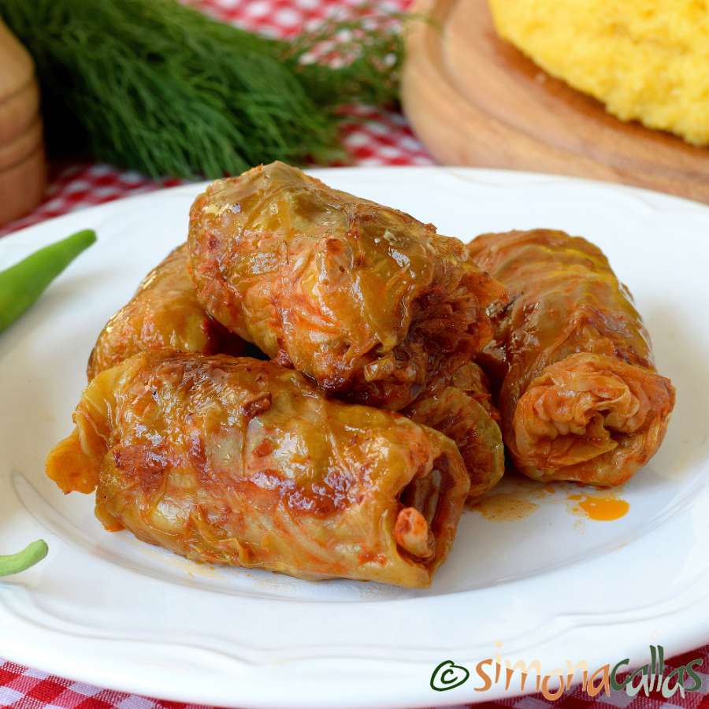

Sarmale

Descriere
Sarmalele sunt un preparat tradițional românesc extrem de gustos cu care
ne-am făcut remarcați de nenumărate ori. Un preparat complet, extrem de
gustos, preparat de gospodine într-o mulțime de feluri. Mai jos îți spunem
rețeta de sarmale în foi de varză murată! Iată ce ai nevoie pentru a face
cele mai bune sarmale.
Ingrediente
- 1-2 verze murate
- 1 kg carne tocata
- 1 ceasca de orez
- 1-2 cepe
- 200g pasta de tomate
- sare,piper,cimbru,foaie de dafin,boia dulce de ardei
- 2-3 linguri ulei
Pasi de urmat
-
Varza se deface în foi, se spală, se lasă la desărat şi dezacrit, dacă e
nevoie, apoi se curăţă de cotoare şi se aşază foile care arată cel mai
bine pe un platou. Foile de varză care nu sunt potrivite pentru umplut,
se toacă fideluţă.
-
Între timp, ceapa tocată mărunt se căleşte puţin într-o tigaie încinsă
cu ulei, se adaugă orezul spălat bine în apă caldă şi scurs, se călesc
împreună pentru 1-2 minute amestecând continuu. Se adaugă apoi 2-3
linguri pastă de tomate şi se stinge totul cu 1 pahar de apă. Acum se
lasă să fiarbă descoperit până începe să se umfle orezul, iar sosul
începe să scadeă. Se lasă la răcit, iar apoi această compoziție se
amestecă bine cu carnea tocată, sare, piper, cimbru, boia dulce.
-
Se umple fiecare foaie de varză cu câte o linguriţă de compoziţie şi se
rulează uşor sarmalele, astfel încât să nu se desfacă la fiert.
-
Varza tocată mărunt se amestecă bine cu o lingură ulei, cu restul de
pastă de tomate şi condimentele.
-
Într-o cratiţă cu fundul mai gros, se aşază mai întâi un strat de varză
tocată, apoi se aranjează sarmalele în straturi, lăsând la mijloc un gol
circular, care se umple cu varză tocată.
-
Când sunt fierte, sarmalele se dau la cuptor să se rumenească frumos.